Rapport d'optimisation de La chouette agence
“My rule of thumb is build a site for a user, not a spider.” - Dave Naylor (@DaveNaylor), Bronco.co.uk Managing Director
SEO: Search Engine Optimization
Avant même de devoir payer pour remonter dans les recherches, il est primordial de pouvoir être réferencé naturellement. Pour cela, il existe 7 grandes étapes afin d'améliorer notre réferencement sur les moteurs de recherches. On peut le voir sur le site de MOZ qui montre un schema pyramidale.
Crawl accessibility
La fondation de la pyramide du SEO, selon le site précédent, est de permettre aux moteurs de
recherche de "crawler", soit de se déplacer afin d'indexer toutes les informations que le robot
trouve.
Afin d'arriver à un résultat propre, le site de La chouette agence a besoin de:
-
Ordonner le code en utilisant des balises sémantiques
 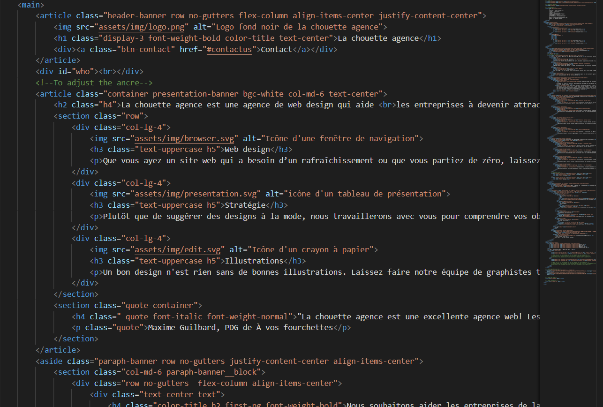
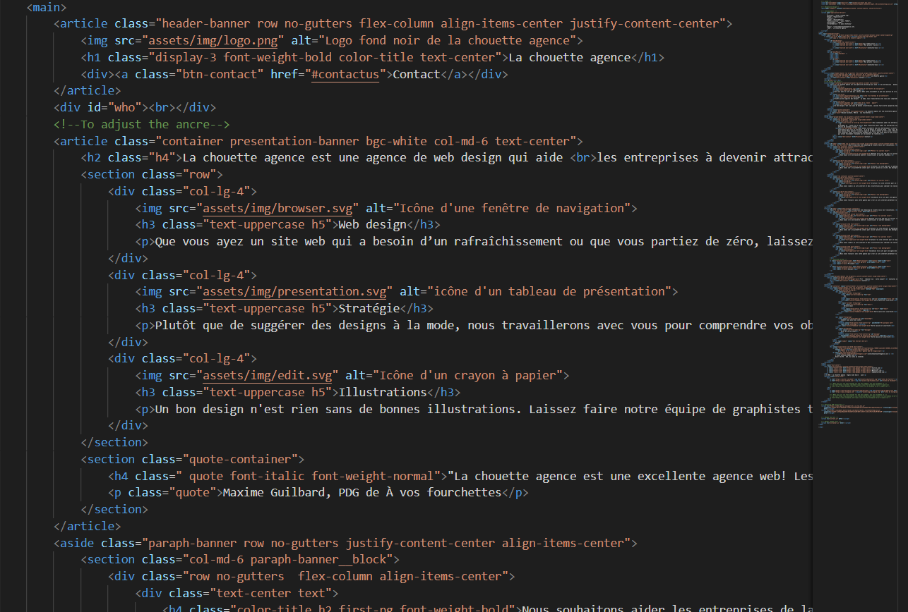
-
Réctifier les balises nécessaires au réferencement:
-
Balise title: permet de décrire en résumé le
contenu du site et c'est ce même titre qui
est repris sur les pages de résultats des moteurs de recherche.
Il faut ainsi, insérer les mots-clés relatifs au contenu.
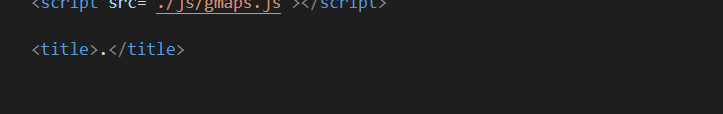 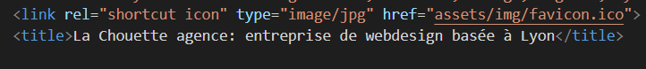
-
Balise meta: les principales balises sont
description et
keywords.
Les balises meta description permettent de rédiger un court résumé du contenu de la page internet et les balises keywords permettent aux utilisateurs de faire des recherches par mots-clés.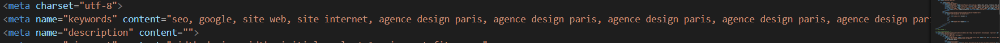
-
Balise title: permet de décrire en résumé le
contenu du site et c'est ce même titre qui
est repris sur les pages de résultats des moteurs de recherche.
Il faut ainsi, insérer les mots-clés relatifs au contenu.
Content
Qui dit SEO dit éventuellement contenu. Il est aussi important d'un point de vue administrateur du site que de l'utilisateur, il faut donc savoir user des mots-clés.
-
Eviter le "content cloacking"
C'est une ancienne technique utilisée par les experts SEO afin de remonter dans les recherches en masquant les mots-clés avec de propriétés css (ex: même couleur que le fond).
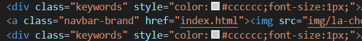
De nos jours, ces pratiques sont pénalisant car les moteurs de recherche ont su s'adapter por reconnaître du content cloacking et ainsi redescendre la position du site. -
Augmenter les mots-clés
Naturellement plus on a de mots-clés plus le robot comprend le contenu et indexe dans la bonne catégorie le site. Ce qui contre-balance bien avec le paragraphe précédent.
Il faut donc augmenter à minima notre contenu, en évitant les textes dans les images et plutôt mettre le texte en brut, c'est-à-dire en utilisant des balises "p" ou "h".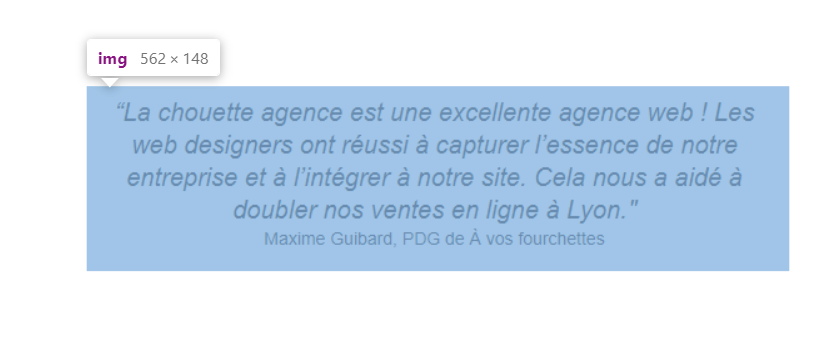 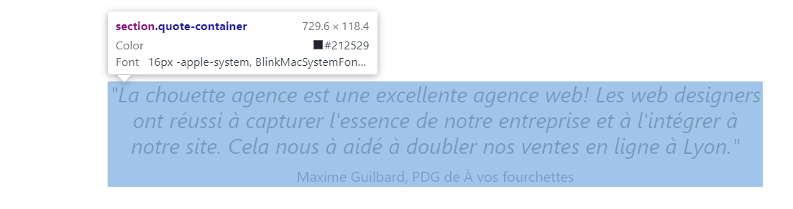
Amélioration de l'accessibilité
Nous vivons dans une ère où toute les catégories de personnes, notamment celles capacités réduites, ont besoin de se connecter à des sites web pour faire des recherches. Ainsi les moteurs de recherche ont implémenté dans leur algorithme ce critère d'accessibilité à tous. Pour améliorer cette expérience utilisateur il faut donc:
-
Adapter le contraste de certains paragraphes et mots pour qu'il soit au niveau définit par le WCAG 2.0
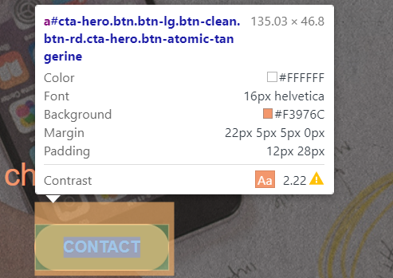 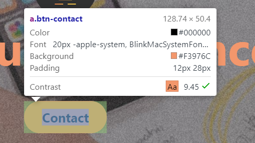 -
Indiquer à l'utilisateur s'il se trouve sur un lien clickable, soit par un soulignement soit par un focus, soit par un background.
-
Toujours rajouter un attribut "alt" aux images. Cet attribut permet de décrire l'image publié afin de ne pas perdre l'information lors d'un chargement difficile d'une page.
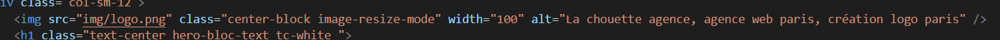 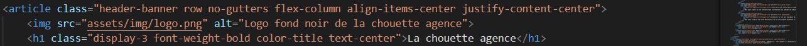 -
Rediriger les utilisateurs vers de liens accessibles et existants car cela dégrade notre expérience utilisateur.
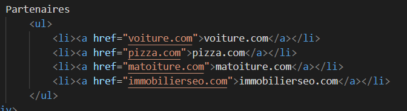 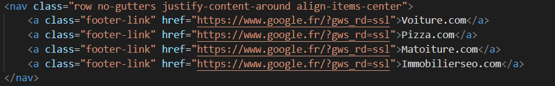 -
Le plus important est l'obligation d'avoir un site responsive. La majorité des utilisateurs consultent les sites via leur smartphone ou tablette, ce qui a mis à jour le fonctionnement des robots des moteurs de recherche en intégrant la partie responsive dans leurs critères de sélection. Un site reponsive sera priorisé.
 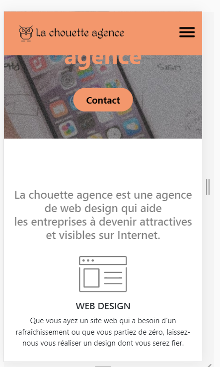
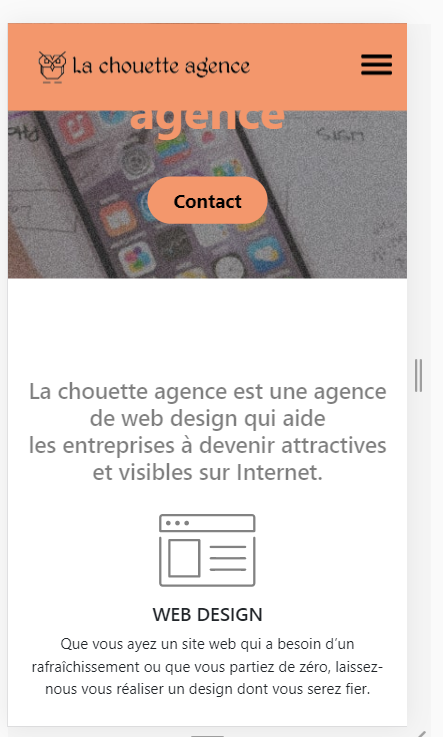
Booster ses performances
La rapidité de chargement est aussi un critère sélectif pour améliorer le SEO. Les géants tel que Google ont intégré cette notion de temps de chargement d'une page en fonction de son contenu et dégrade ainsi le positionnement si jamais la page est lente a chargée alors que c'est une landing page. Pour optimiser ce chargement, il faut:
Optimiser les images
Les images sont les principales sources de lenteur au fait des ressources nécessaires à les charger. Ajouté à une connexion lente, c'est un vrai souci du côté d'expérience utilisateur.
-
On peut réduire la taille des images, ou les recadrer afin de diminuer son poids.
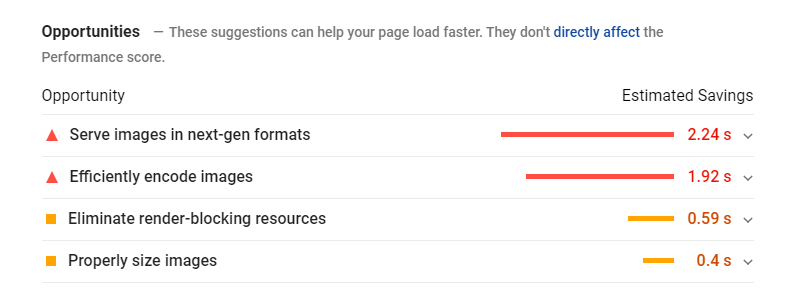 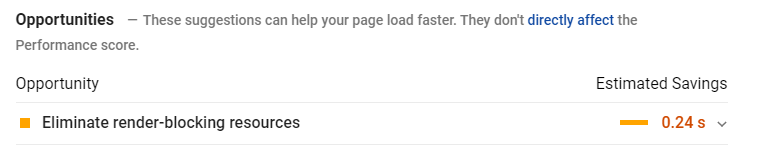 -
Permettre à notre hebergeur de stocker/changer le temps de vie des images dans le cache navigateur pour ne pas à recalculer le poids lors d'une prochaine visite par l'utilisateur.
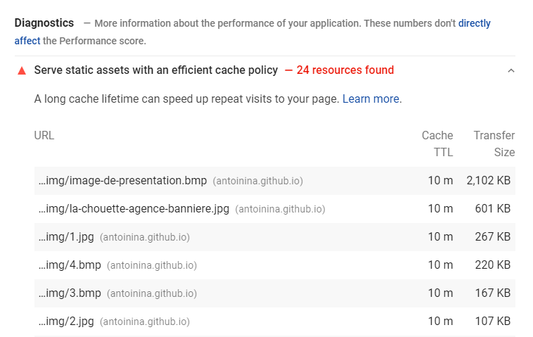 -
Traiter les images en externe pour ne pas à superposer les images entre-elles. Si le but est d'avoir un rendu visuel, cela peut être traité via un outil externe tel que Photoshop.
Supprimer ou adpater les autres fichiers
Les fichiers externes (js ou php) nécessitent une grosse ressource afin de les charger et peut ainsi générer une lenteur de chargement.
-
Supprimer le js actuel qui ne sert à rien et le remplacer par d'autres fonctions afin d'améliorer l'expérience utilisateur et rajouter un defer pour le charger en différer
-
Supprimer le php qui peut être gérer par un js
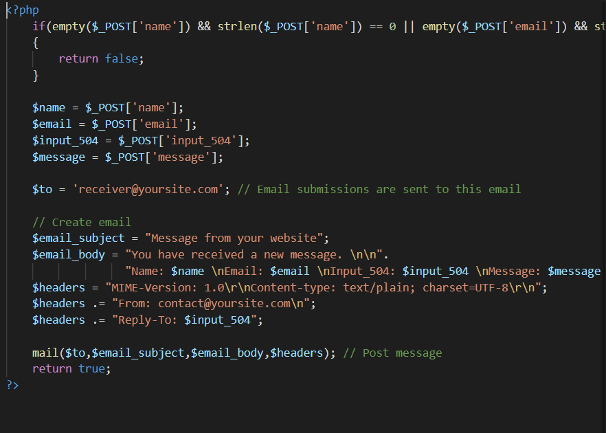 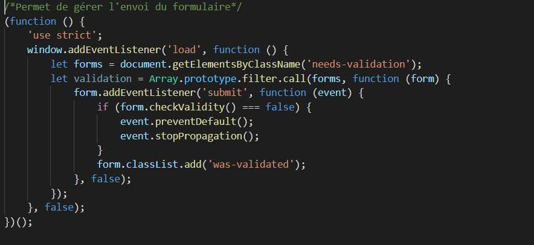